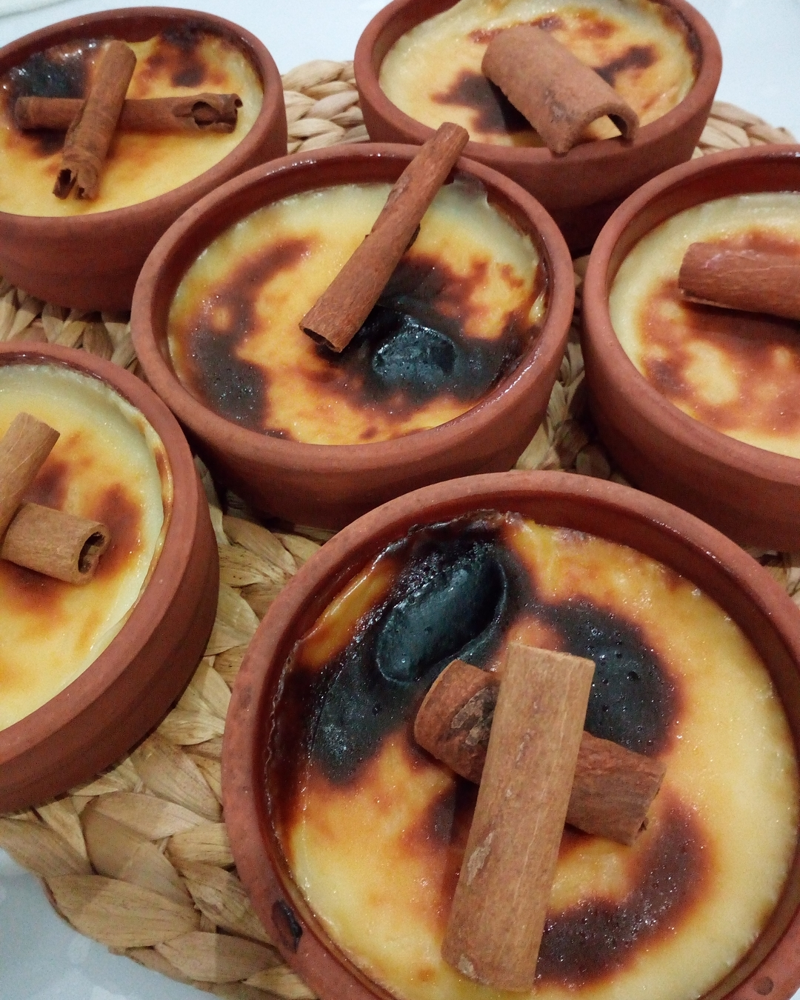

Čorba podľa @hatipati_mutfakta — Normy Jedál
Hayırlı günler hepimize
İftara doğru fırın sütlaçimiz
hazir.
FIRIN SÜTLAÇ
1 litre süt
2 su bardağı su
Yarım su bardağı pirinç
1.5_2 su bardağı şeker
Vanilya
2 yemek kaşığı nişasta veya
pirinç unu
1 yumurta sarısı
YAPILIŞI
Önce pirinçleri 2 bardak suda pişirelim.
Sonra sütü şekeri vanilyayı ekleyip kaynatalım.
Sonra nişastayı yarım bardak süt ile iyice açıp yumurta sarısıni ekleyip sütlaça ilave edelim.
10 dk.kaynadıktan sonra güveç kaplarına boşaltalım.
Su koyduğumuz fırın tepsisine dizip 200 derecede üzeri kızarana kadar pişirelim.
Afiyetle sağlıkla yiyelim inşallah,herkese hayırlı iftarlar....
#sütlaç#firinsutlac#evyapimi#fyp#tatli#tuzlu#ramazan#iftarmenusu#sahur#iftar#pide#corba#evyemekleri#bayram